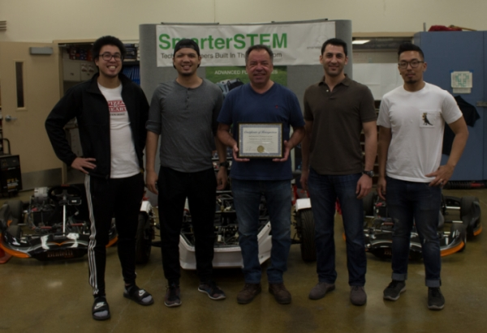
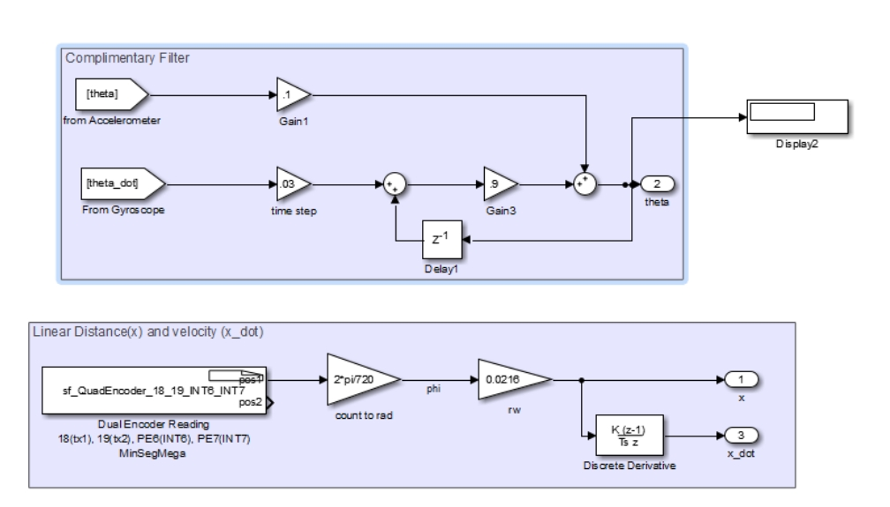
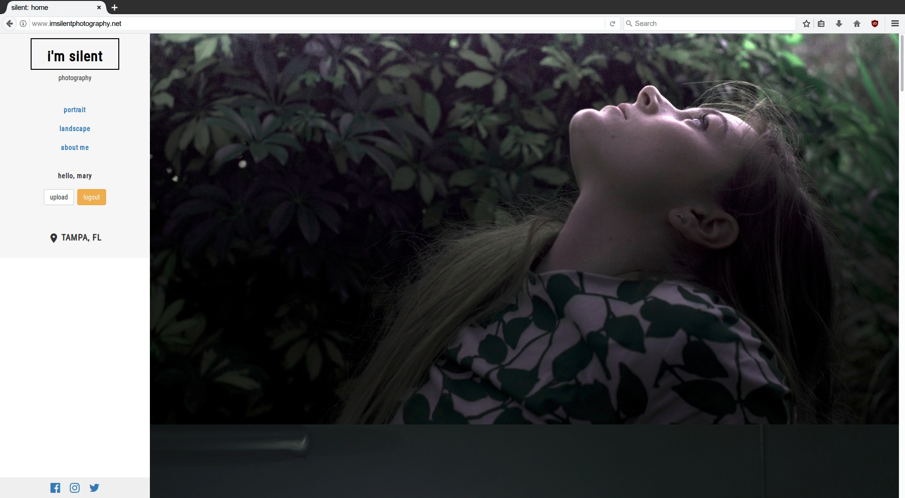

Reuben Reyes
Mechanical engineer, software engineer, web developer
I'M AVAILABLE FOR HIRE
Expertise
I hold a B.S. Mechanical Engineering from San Jose State University. I've got a diverse skillset ranging from solid modeling, to automation scripting, to full-stack development.
Mechatronic Systems
{{ lafayette }}
Controls and Automation
{{ lafayette }}
Full-Stack Development
{{ lafayette }}
Engineering Projects
As a mechanical engineer, I've gotten my hands dirty while taking on innovative projects.

Pathway to Engineering
A breakthrough program with Independence High School (IHS), San Jose, CA which connects students to college STEM programs. We repaired a power dynamometer, fabricated new fixtures, and developed software to transform part of IHS' auto shop into an engineering lab. Introduced a curriculum involving key engineering topics to fulfill a long-term goal in bringing San Jose's students into the STEM field.
SEE MORE

Automatic Bicycle Shifter
An automated alternative to the traditional bicycle shifting system. Developed from scratch, this design incorporates magnetic sensors and an Arduino microcontroller to listen for changes in the rider's cadence and RPMs. The automatic bicycle shifter uses that information to shift to the optimal gear, performing responsively and robustly even going up steep inclines and at high speeds.
SEE MORE

"Segway" Robot Stabilization
Designed and implemented a program that allowed a miniature "Segway" robot to stand up on its own. Wrote scripts in MATLAB and designed a controller in Simulink, both of which worked together to utilize on-board sensors to listen for and respond to destabilizing forces which would otherwise topple the robot.
SEE MORE
Development Projects
My skillset as a developer grows rapidly every day, and my work only gets more ambitious.

I'm Silent Photography
Full-Stack Development. Django, Python, JavaScript, Bootstrap.
Mary Medovich is a photographer based out of Tampa, FL. She has a gift for rearranging nature's details into perfect picture frames that even the trained eye wouldn't think to notice.
VISIT THE WEBSITE

Bagel Defender
C#, Unity3D, Adobe CC
A homage to Galaga, but with a unique added experience: Now you know what your server felt like when you were rude to them that one night at Olive Garden. Bagel Defender was a passioned collaboration with Zelly Thomas.
PLAY THE GAME